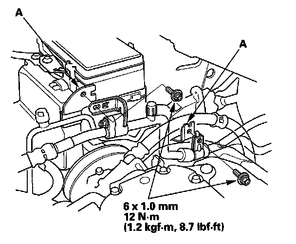

Removal and Replacement
Alternator Removal and InstallationRemoval
1. Make sure you have the anti-theft codes for the audio system and navigation system (if equipped). Make sure the ignition switch is OFF.
2. Disconnect the negative cable from the battery first, then disconnect the positive cable.
3. Remove the engine cover
4. Remove the drive belt
5. Remove the A/C suction line from brackets (A).
6. Remove the coolant reservoir (A), then remove power steering fluid reservoir (B) from the bracket.
7. Remove the harness bracket (A), then disconnect the A/C compressor clutch connector (B).
8. Disconnect the alternator connector (C) and the BLK wire (D) from the alternator.

9. Remove the mounting bolt (A) and alternator bracket mounting bolt (B), then remove the alternator.
Installation
1. Install the alternator, and tighten the mounting bolt (A) and bracket mounting bolt (B).
2. Connect the alternator connector (A), BLK wire (B) to the alternator.
3. Install the harness bracket (C), then connect the A/C compressor clutch connector (D).

4. Install the power steering fluid reservoir (A) to the bracket, then install the coolant reservoir (B).

5. Install the A/C suction line to the brackets (A).
6. Install the drive belt.
7. Install the engine cover
8. Connect the positive cable to the battery first, then connect the negative cable.
9. Do the steering column position memorization.
10. Enter the anti-theft codes for the audio system and navigation system (if equipped).
11. Set the clock.